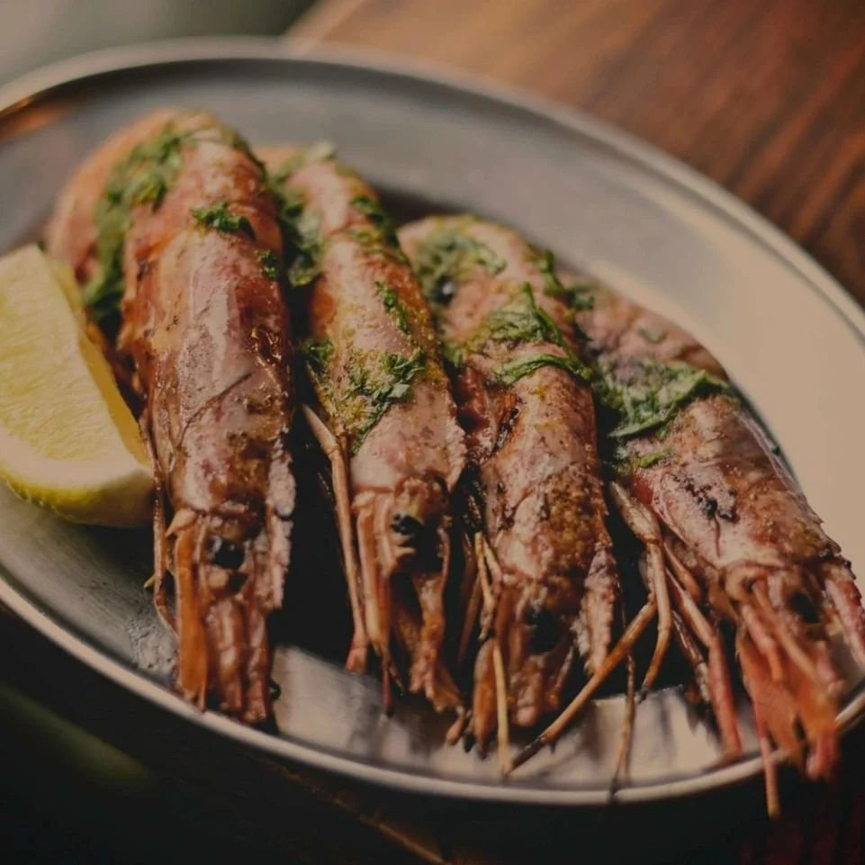

Porta Tapas - Manchester
The menu represents many tapas bar classics, with additional daily specials. Our team of chefs prepare everything from scratch using top-quality ingredients imported from some of the very best producers in Spain.
Simply put, Porta is the kind of place to relax in - unpretentious and comfortable with good music, beer, wine and food.
